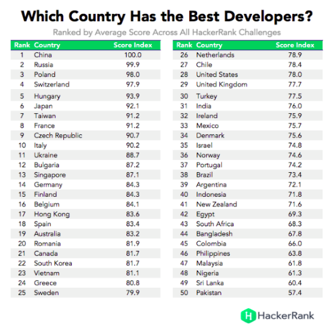
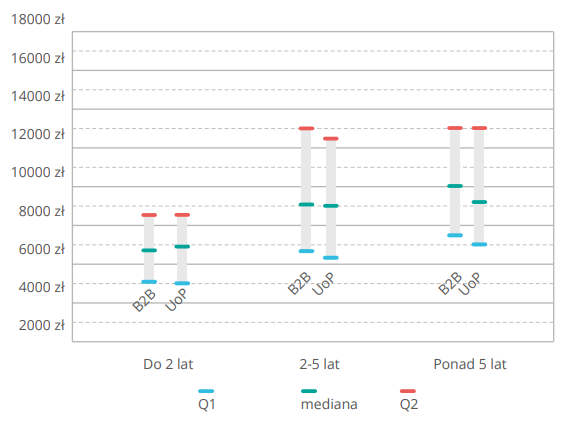

Dlaczego nie będziesz testerem i co możesz z tym fantem zrobić jeśli bardzo chcesz?
Wykorzystano zdjęcie autorstwa Erik Mclean z Pexels
Zachęcony wątkiem z Facebookowej grupy dotyczącej testowania oprogramowania, w którym mowa o problemach z podjęciem pracy w zawodzie testera oprogramowania, dorzucę swoje 3 grosze do tej rozmowy. Pamiętaj, mój drogi czytelniku, że jestem zupełnie oderwany od juniorskiej rzeczywistości, bo mam już te kilka lat stażu pracy w tym zawodzie, zachęcam cię jednak do przeczytania poniższego wpisu, szczególnie jeśli jesteś w sytuacji opisanej powyżej.
Poznajmy fakty
W Polsce brakuje około 50 tyś rąk do pracy w branży IT. W naszym kraju powstaje też bardzo dużo stanowisk w tej branży. Dlaczego tak się dzieje? Są 2 bardzo istotne aspekty. Pierwszy z nich to fakt, że jesteśmy bardzo cenionymi fachowcami w tej branży (spójrz również na poniższe zestawienie, gdzie nasz kraj plasował się na 3 miejscu w punktacji ogólnej programistów w 2016 roku).

W porównaniu z innymi krajami, jesteśmy jeszcze stosunkowo tani (pamiętam, jak w jednej z firm, przelicznik był mniej więcej taki, że jeden programista z USA był liczony jak 3 w Polsce).
Dla tzw. biznesu patrzącego na cyferki w Excelu Polacy są pracownikami o bardzo dobrym stosunku jakości do ceny, a więc bardzo dużo firm przenosi swoje działy do naszego kraju. Powoduje to efekt domina, gdzie zapotrzebowanie na pracowników rośnie, a więc rośnie też presja dla firm na pozyskiwanie nowych pracowników, co z kolei powoduje wzrost płacy. Firmy natomiast nie są w stanie pozyskać doświadczonym pracowników i przekują ich coraz wyższym wynagrodzeniem. Efekt jest taki, że mediana zarobków szybuje w górę. W 2018 wg portalu NoFluffJobs mediana zarobków dla osób z ponad 5-letnim doświadczeniem oraz zatrudnieniu na podstawie umowy o pracę (UOP) wynosiła ponad 9 tys. zł brutto (zerknij na poniższą infografikę z danymi za rok 2018).

Patrząc na oferty pracy, wydaje się to kwota mała, ale pamiętajmy, że jest to wartość środkowa z całego badanego zakresu. Jeśli spojrzymy na oferty pracy dla doświadczonych programistów, to jesteśmy w stanie znaleźć oferty sięgające 25-30 tys. zł. A to już są kwoty działające na wyobraźnię wielu osób, które chcą godnie żyć. Szczególnie gdy będziemy mieli na uwadze, że mediana pensji brutto w przedsiębiorstwach, w tym samym okresie wynosiła około 4,2 tys. złotych brutto.
Decyzja o przekwalifikowaniu
Popatrzmy, co się dzieje:
- pracownik zarabiający około 3 tys. na rękę (4,2 tys. brutto) otwiera pierwszy lepszy portal z ogłoszeniami o pracę dla "informatyków" i widzi oferty przebijające 10 tys. złotych brutto (około 7 tys. zł na rękę)
- zaczyna analizować i dochodzi do wniosku, że fajnie byłoby zmienić pracę i zarabiać więcej
- otwiera przeglądarkę i zaczyna szukać informacji, jak zacząć pracę w branży IT bez kwalifikacji
- trafia na masę artykułów oraz wpisów na forach, że najłatwiej jest zacząć od bycia testerem oprogramowania
- szuka więc dalej, o co chodzi i co taki tester musi umieć i wychodzi mu na to, że trzeba zdać certyfikat ISTQB Foundation Level, a cała reszta będzie już z górki.
Decyzja jest prosta, trzeba się przekwalifikować i żyć na poziomie. Zdecydowanie zgadzam się z takim podejściem i każdemu życzę, aby mu się udało. Mam jednak małe zastrzeżenie i mam nadzieję, że weźmiesz je pod uwagę, myśląc o przekwalifikowaniu.
Gdzie jest problem?
Tak naprawdę to problem nie jest jeden, ale jest ich kilka, które wzmacniają swój efekt, a które powodują, że ludziom bez doświadczenia jest coraz trudniej dostać się do branży IT. O dziwo, odnoszę wrażenie, że w ostatnim czasie, łatwiej jest ludziom dostać pracę na stanowisku programisty niż testera. Przejdźmy jednak do rzeczy i omówmy, jakie to problemy trzeba przezwyciężyć, aby znaleźć zatrudnienie jako tester oprogramowania.
Najważniejszy problem to bardzo duża konkurencja. Okazuje się, że jeśli wszyscy, którzy chcą się przekwalifikować i wszyscy dochodzą do wniosku, że najłatwiej jest zostać testerem, to ilość potencjalnych kandydatów na stanowisku tzw. juniora, czyli osoby o bardzo małym doświadczeniu, zdecydowanie przewyższa ilość ofert pracy na to stanowisko.
A ileż to jest ofert pracy dla początkujących? Okazuje się, że jest ich jak na lekarstwo. Główny powód małej ilości ofert na stanowiska juniorskie i to nie tylko w testowaniu, ale również na stanowiska programistów to czas potrzebny na nauczenie nowej osoby "fachu". Czas nauki zależy od predyspozycji i może trwać (w mojej ocenie) od minimum 3 miesięcy do nawet 1 roku. Wszystko zależy czy mówimy tylko o testach manualnych prostej aplikacji, czy też testów automatycznych np. w branży automotive. Ten okres to bardzo wysoki koszt dla pracodawcy. Powiesz zapewne, że junior ma niską pensję. Tak, ale pensja juniora to tylko jedna składowa faktycznego kosztu, na który składa się jeszcze czas pracownika, który wdraża i nadzoruje nową osobę, a której pensja przeważnie jest znacznie wyższa. Dochodzi do tego obsuwa w terminach realizacji projektów, która pociąga za sobą (w zależności od produktu), albo niższy zysk, albo konieczność zatrudnienia bardziej doświadczonej osoby, aby dotrzymać terminów. Efekt jest taki, że na zatrudnianie juniorów stać w zasadzie tylko bardzo duże firmy (najczęściej korporacje) i jest to inwestycja długoterminowa. Mniejsze firmy, których jest zdecydowanie więcej, wolą zatrudniać kogoś, kto ma już jakieś doświadczenie, a więc koszt wdrożenia do firmy będzie zdecydowanie niższy. Nawet jeśli będą musiały zapłacić więcej o kilkadziesiąt procent miesięcznie więcej za pracownika z rocznym doświadczeniem niż za juniora, to patrząc na oszczędność czasu bardziej doświadczonych członków zespołu oraz utrzymanie (prawie) stałej prędkości wytwarzania produktu, okaże się, że taki początkujący "mid" (potocznie ktoś z małym doświadczeniem) okazuje się tańszy.
Dlaczego ISTQB to za mało?
Jeśli jesteś tym szczęśliwcem i pracujesz już w branży IT jako tester, to zdajesz sobie sprawę, że ISTQB to zbiór definicji i podstawy podstaw wiedzy testerskiej. Jeśli dodatkowo miałeś już przyjemność zmiany pracy lub mając kilkuletnie doświadczenie, byłeś na kilku rozmowach kwalifikacyjnych, zapewne zauważyłeś, że nikt z rekruterów nie prosi o okazanie certyfikatu ISTQB. Dlaczego tak jest? Otóż sylabus ISTQB można określić jako poradnik testera, który dodatkowo uwspólnia definicję pewnych pojęć (np. przypadek testowy itp.). Wiedza wyniesiona z sylabusa jest bardzo potrzebna, aby móc swobodnie się porozumiewać. Uczy również pewnych podstaw (np. testowanie na końcach zakresów itp.), ale nic nie mówi na temat praktycznych umiejętności, jakie potencjalny tester posiada. Czy więc warto zdawać egzamin z ISTQB? Należałoby odpowiedzieć to zależy. A zależy to od tego, czy potrzebujesz tego papierka, w pracy, czy nie. Okazuje się, że niektóre firmy, aby przystąpić do jakichś przetargów, muszą wykazać, że pracownicy mają pewne certyfikaty.
Jak ja bym podszedł do tematu? Bardzo prosto:
- nauczyłbym się pojęć z sylabusa oraz starał się go zrozumieć,
- poszukał przykładowych pytań egzaminacyjnych i zrozumiał, dlaczego takie, a nie inne odpowiedzi są prawidłowe (w tym może pomóc ta grupa na Facebooku),
- w CV wpisałbym znajomość sylabusa ISTQB,
- jeśli pracodawca wymaga certyfikatu w pracy, to zapłaci Ci za egzamin.
Dlaczego ja bym tak zrobił? Otóż na rozmowie kwalifikacyjnej, tak czy inaczej, będzie zweryfikowana Twoja wiedza z zakresu sylabusa.
Co jeszcze muszę umieć?
W dzisiejszych czasach oraz realiach, gdzie większość projektów realizowanych jest dla zagranicznych klientów oraz dokumentacja techniczna praktycznie zawsze jest w języku angielskim, to znajomość tego języka jest obowiązkowym punktem każdego CV.
Ze względu na to, że duża część nowych projektów pisanych jest z wykorzystaniem tzw. chmury lub jest po prostu aplikacjami webowymi, należałoby nauczyć się choćby podstaw HTML'a, CSS'a, czym jest protokół HTTP oraz jak działa REST API. Tę wiedzę uzupełniłbym o zaznajomienie się z narzędziami developerskimi w przeglądarce Chrome. Ten zestaw pozwoli Ci na ciut większe zagłębienie się w testowaną aplikację oraz przygotują do pisania testów automatycznych w dowolnym język programowania.
Dodatkowym atutem może okazać się wiedza języka zapytań baz danych, czyli tzw. SQL (Structured Query Language).
Ostatnim elementem, który może być mega atutem to nauka jakiegoś języka programowania (osobiście polecam Pythona na początek), stworzenie prostego projektu oraz umieszczenie go w swoim repozytorium kodu.
Dodatkowo każdy tester powinien nie bać się powiedzieć nie wiem oraz zadawać pytania, jeśli wie, że czegoś nie wie lub nie rozumie. Również podczas rozmowy kwalifikacyjnej lepiej się przyznać do niewiedzy i prosić o wyjaśnienie niż kombinować na siłę z odpowiedzią.
Ostatnimi czasy, bardzo polecane są platformy typu crowd testing (np. platforma test.io), gdzie można testować aplikacje i przy okazji trochę na tym zarobić. Nie będą to kokosy, ale pokażą Ci, z czym wiąże się praca testera oraz pozwolą Ci na weryfikację Twojej wiedzy i umiejętności.
Na zakończenie
Podsumowując ten wpis, chcę dać Ci do zrozumienia, że konkurencja o stanowisko testera dla osób początkujących jest spora i aby przejść pomyślnie rekrutację, należy się wyróżnić na tle konkurencji. Poza wiedzą książkową należy pokazać jakieś praktyczne umiejętności oraz mieć odpowiednie nastawienie. Pamiętaj również, że jeżeli jedynym kryterium, jakim się kierujesz, próbując zdobyć upragnione stanowisko testera, są wysokie zarobki, to może okazać się bardzo szybko, że to jednak nie jest praca dla Ciebie. Pamiętaj również, że nie wszyscy muszą pracować w branży IT oraz to, że każda praca, tak i praca testera oprogramowania, ma swoje jasne i ciemne strony. Jeśli jednak zdecydujesz i upewnisz się, że Twoja ścieżka kariery jako tester oprogramowania, to jest to, co chcesz robić oraz nie boisz się zainwestować swój czas w naukę, to pozostaje mi tylko życzyć Ci powodzenia.


Komentarze
Comments powered by Disqus